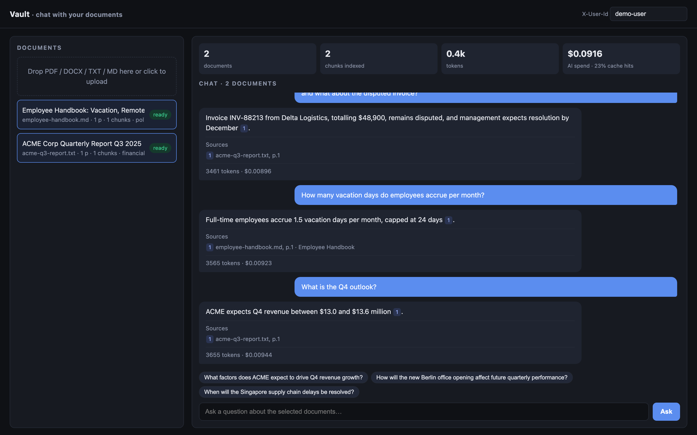
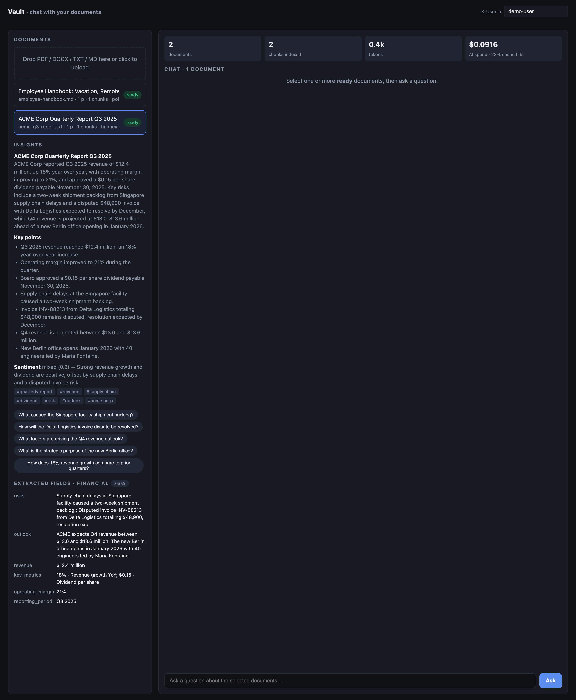
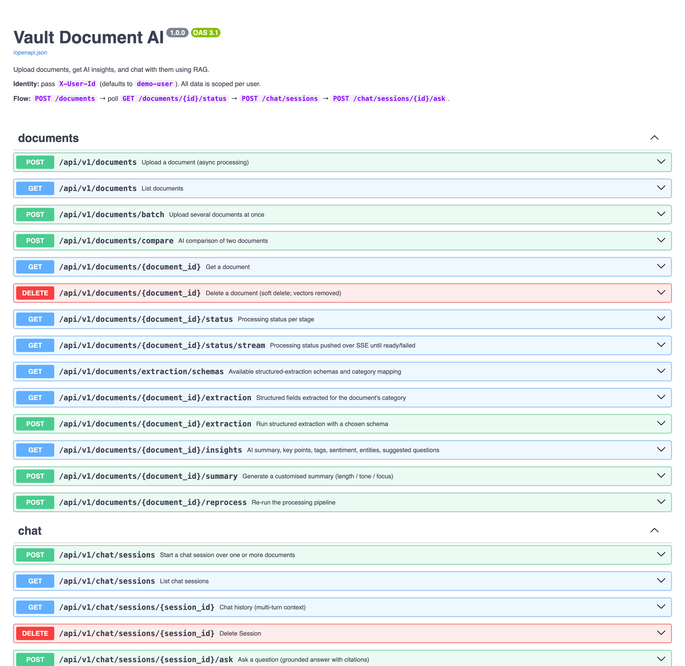

Vault Document AI
System Design Document · FastAPI · Celery + Redis · PostgreSQL 16 + pgvector · OpenAI / Anthropic / Claude CLI · SSE
"ChatGPT for your documents" as a production-shaped backend — uploads become searchable, summarised, tagged and
field-extracted knowledge in seconds; questions get grounded answers whose every citation is verified against the
passages the model was actually shown; every AI call is metered; every pipeline stage is observable and retryable.
5pipeline stages
26API endpoints
59 + 11tests + golden eval cases
0keys needed to run tests
High-Level Architecture
flowchart TD
User(["Dashboard · curl · SDK"])
subgraph API["FastAPI — async, N replicas"]
UP["POST /documents\nsize limit · MIME sniff · SHA-256 dedup · versioning"]
DOC["GET /documents /status /insights /extraction\nPOST /summary /compare /reprocess"]
CHAT["POST /chat/sessions/:id/ask (JSON | SSE)\ncondense → retrieve → generate → verify citations"]
MET["GET /metrics/documents · /processing · /costs · /prometheus\nGET /health/live · /ready"]
end
subgraph WK["Celery workers — queue: documents"]
T["process_document(version)\nextract → chunk → embed → analyse → structured"]
end
subgraph ST["Storage"]
PG[("PostgreSQL 16\ndocuments · versions · chunks (vector + tsvector)\ninsights · sessions · messages\nprocessing_jobs · ai_usage")]
RD[("Redis\nbroker · embedding cache\nanswer cache · rate limits")]
BL["Blob store\nlocal FS or S3\ncontent-addressed by SHA-256"]
end
subgraph AI["AI providers (auto-resolved)"]
LLM["LLM\nOpenAI · Anthropic · Claude CLI"]
EMB["Embeddings\nOpenAI · local hashed"]
end
User -->|upload → 202| UP
User --> DOC
User -->|ask / stream| CHAT
User --> MET
UP -->|blob| BL
UP -->|rows + queued job| PG
UP -->|enqueue| RD
RD -->|deliver| T
T --> BL
T -->|chunks · vectors · insights · job rows · usage| PG
T -->|batch embed, cache-aside| EMB
T -->|analysis · extraction JSON| LLM
CHAT -->|hybrid search| PG
CHAT -->|query embedding| EMB
CHAT -->|condense · answer · follow-ups| LLM
CHAT -->|caches · limits| RD
The API never does heavy work: uploads return 202 in milliseconds; chat touches indexed columns plus the model.
Why these pieces
| Axis | Chosen | Considered | Reason |
|---|
| Framework | FastAPI | Flask, Django | Native async, Pydantic contracts, auto OpenAPI docs, SSE-friendly |
| Queue | Celery + Redis | RQ, arq, BackgroundTasks | Retries with back-off, acks_late, time limits, per-queue scaling; BackgroundTasks die with the API |
| Vectors | pgvector | Pinecone, Weaviate, FAISS | One transactional store for metadata + vectors; hybrid search is one SQL query; tenant/version filters are WHERE clauses |
| RAG | Thin hand-rolled layer | LangChain, LlamaIndex | Prompts visible and testable; exact control of chunking, fusion, citation verification; ~500 lines |
| Providers | auto → OpenAI / Anthropic / Claude CLI | single vendor | Key present → that provider; logged-in claude CLI → no key needed; nothing → fail fast (never silent fake) |
Feature 1 — Intelligent Ingestion Pipeline
Objective: turn any PDF / DOCX / TXT / MD into searchable chunks and structured insight —
asynchronously, idempotently, with per-stage telemetry and clear failure semantics.
Upload Handler
- Streamed size check — reads 1 MB at a time; rejects with
413 before buffering an oversized file
- MIME sniffing — type decided from magic bytes (
%PDF, PK\x03\x04), never the client header; unsupported → 415
- SHA-256 dedup — same bytes for the same owner returns the existing document (
deduplicated: true), zero reprocessing
- Versioning —
replace_document_id creates version N+1; chunks and insights hang off the version, so a re-upload never leaves stale vectors
- 202 + job row — a
processing_jobs row is written before enqueueing; a broker outage marks the document failed with guidance instead of a 500
- Batch — up to 20 files per request; per-file errors returned, the rest proceed
Five Stages, One Task per Version
- extract — pypdf per page · python-docx with headings as sections · text paginated every 3 000 chars; page map kept for citations
- chunk — recursive, token-aware, structure-first: headings → paragraphs → sentences → tokens; 400 tokens, 60-token overlap, page range + section per chunk
- embed — batches of 100 through a Redis cache keyed by
sha256(model+text); vectors into pgvector (HNSW), generated tsvector (GIN)
- analyse — one schema-constrained JSON call on a representative excerpt → title, summary, key points, category, tags, sentiment, entities, language, suggested questions
- structured — category picks a schema (invoice, contract, legal, financial, report, policy, research, generic); verbatim field values + confidence; non-fatal
- Each stage commits its own job row — a failure in stage 4 keeps stages 1–3 visible in
/status and in metrics
Upload & Processing Flow
sequenceDiagram
participant C as Client
participant A as FastAPI
participant S as Blob store
participant P as PostgreSQL
participant Q as Redis (broker)
participant W as Celery worker
participant E as Embeddings
participant L as LLM
C->>A: POST /documents (multipart)
A->>A: stream ≤ 25 MB · sniff MIME · SHA-256
A->>P: same hash for this owner?
alt duplicate
A->>C: 202 deduplicated=true (existing document)
else new content
A->>S: put(blob keyed by hash)
A->>P: documents + document_versions + processing_jobs(queued)
A->>Q: process_document(doc_id, version_id)
A->>C: 202 {document, task_id}
end
Q->>W: deliver (acks_late, prefetch 1)
W->>P: wipe chunks/insights for this version (idempotent re-run)
W->>S: get blob
W->>W: extract pages → chunk (400 tok / 60 overlap)
W->>P: job(extract) ✓ · job(chunk) ✓
W->>E: embed cache misses in batches of 100
W->>P: chunks + vectors · job(embed) ✓ · ai_usage
W->>L: analysis prompt (JSON) on representative excerpt
W->>P: insights · title/category/tags · job(analyse) ✓ · ai_usage
W->>L: category → schema → extraction prompt (JSON)
W->>P: insights(kind=extraction) · job(structured) ✓ · ai_usage
W->>P: document.status = ready
C->>A: GET /documents/:id/status/stream (SSE) or poll /status
A->>C: status events until ready / failed
Document Lifecycle & Failure Classes
stateDiagram-v2
[*] --> uploaded : POST /documents
uploaded --> processing : worker claims job
processing --> ready : all stages succeeded
processing --> processing : transient error → retry (backoff, ≤ 3)
processing --> failed : permanent error or retries exhausted
failed --> uploaded : POST /reprocess · re-upload same bytes
ready --> uploaded : new version (replace_document_id)
ready --> [*] : DELETE (soft; vectors removed)
| Class | Examples | Behaviour |
|---|
| Permanent | encrypted or scanned PDF, empty file, unsupported type | Document → failed with a human-readable error; no retry |
| Transient | provider 429/5xx, timeouts, DB blip | Tenacity retries inside the call (jittered back-off); Celery autoretry ×3; attempt number on every job row |
| Infra | broker unreachable at upload | Document → failed with "call /reprocess"; never a 500 |
| Orphaned | worker killed mid-run | /reprocess?force=true; the new run marks stale open jobs "superseded" |
Feature 2 — Document Chat (RAG) with Verified Citations
Objective: accurate, cited answers over one or many documents, with real multi-turn context,
sub-second first token, and no answers from outside the documents.
flowchart TD
Q["question + session (1–20 documents)"] --> H{"history?"}
H -->|yes| CQ["condense into standalone question\n(fast model, temperature 0)"]
H -->|no| K
CQ --> K{"answer cache\nowner · versions · question · model"}
K -->|hit| PERSIST
K -->|miss| EMB["embed query\n(Redis cache-aside)"]
EMB --> V["pgvector cosine\ntop-20"]
Q --> F["full-text search\nwebsearch_to_tsquery · top-20"]
V --> RRF["Reciprocal Rank Fusion\nscore = Σ 1/(60 + rank)"]
F --> RRF
RRF --> RR{"RERANK_ENABLED?"}
RR -->|no| TRIM
RR -->|yes| RK["rerank top-20\ncross-encoder · LLM · lexical\nblend w·rerank + (1−w)·rrf"]
RK --> TRIM["top-8 · trimmed to 3 000-token budget"]
TRIM --> PROMPT["grounding prompt\n[n] (file, p.X) passages + last 8 turns\n(history stripped of stale [n] markers)"]
PROMPT --> GEN["generate — main model\nJSON or SSE token stream"]
GEN --> VER["verify citations\ndrop unknown [n] · renumber densely"]
VER --> FU["3 follow-up questions\n(fast model, best-effort)"]
FU --> PERSIST["persist user + assistant messages\ncitations · follow-ups · usage/cost"]
PERSIST --> RESP["response / SSE done"]
Hybrid Retrieval
- Dense — pgvector cosine over HNSW (m=16, ef_construction=64) catches paraphrase ("cost" ≈ "price")
- Sparse — PostgreSQL
tsvector + GIN catches exact tokens: invoice numbers, names, codes
- Reciprocal Rank Fusion — merges the two ranked lists without calibrating incompatible scores
- Tenant + version scoped —
owner_id and current version_id filters run before ANN
- Reranker flag — optional second stage; cross-encoder runs locally at zero API cost; safe fallback if the model can't load
- Token budget — at most 8 chunks / 3 000 tokens, so prompt size is bounded regardless of corpus size
Grounding & Citation Verification
- Passages numbered
[n] (file, p.X); the prompt says use ONLY these and demands a citation after every factual sentence
- An explicit "I don't know" path gives the model a sanctioned alternative to guessing
- Numbers, dates and identifiers must be quoted verbatim
- Code verifies, not trusts —
verify_citations() deletes markers that point at passages never supplied, renumbers the rest, and returns only the citations actually used with file · page · section · snippet
- History sent to the model has earlier
[n] markers stripped and a rule forbidding "corrections" of previous turns — a real-model bug found by the demo
- Condense-question rewrites "and the disputed invoice?" into a standalone query before retrieval
Streaming Contract (SSE)
POST /chat/sessions/{id}/ask/stream
event: status {"stage":"understanding"}
event: status {"stage":"retrieving","query":"<standalone question>"}
event: citations [{"n":1,"filename":"acme-q3.txt","page_start":1,"section":"Risks","snippet":"…"}] ← before any token
event: token {"t":"Revenue "} … repeated
event: follow_ups ["…","…","…"]
event: done {"message_id":"…","final_text":"…","citations":[…],"usage":{…}}
event: error {"detail":"…","status":409}
- Sources arrive before tokens so a UI can render the "reading …" state immediately
done carries the verified final text (hallucinated markers removed) so the client can replace the streamed draftGET /documents/{id}/status/stream uses the same transport for processing progress
Feature 3 — AI Insights & Structured Extraction
Objective: automate understanding — summaries, tags, sentiment, entities, suggested questions, typed fields — with outputs a program can trust.
Schema-Constrained Analysis
- One JSON call returns title, summary, 3–7 key points, category (12-value enum), 3–8 tags, sentiment {label, score, rationale}, entities {people, organizations, dates, amounts}, language, 3–5 suggested questions
- Enums make
GET /documents?category=invoice reliable; length caps keep JSONB small
- Pydantic normalises (lower-case, dedupe, clamp) so a slightly off response still yields data, not a 500
- Representative excerpt — first chunks + evenly spaced samples up to ~6 k tokens: one call, ~10× cheaper than map-reduce; chat still has full-fidelity retrieval
- Custom summaries — length (short · medium · long · bullets), tone (neutral · executive · casual · technical), free-text focus; interpolated into one template; cached per options hash
- Compare — similarities, differences, recommendation across two documents
Structured Extraction per Category
- Category → schema registry:
invoice (vendor, totals, line items) · contract (parties, term, governing law, obligations) · financial/report (period, revenue, metrics, risks, outlook) · policy · research · legal · generic
- Prompt shows the schema as JSON with type hints; demands verbatim values, empty strings when absent, and a
confidence score
- Stored as
document_insights.kind = "extraction"; several schemas can coexist per version (cached per schema)
POST /documents/{id}/extraction {"schema_name":"invoice"} re-runs with any schema; GET /documents/extraction/schemas lists them- Adding a category is a data change (one dict entry), not a code change
- Real run on the sample report: 6/7 fields, confidence 0.9 — revenue, margin, period, metrics, risks, outlook, people
Model Routing & Provider Resolution
| Purpose | Tier | Temperature | Output handling |
|---|
| Chat answer | main | 0.2 | citations verified programmatically |
| Document analysis · custom summary · comparison · extraction | main | 0.0–0.2 | JSON → Pydantic → JSONB |
| Condense follow-up | fast | 0.0 | deterministic → cache hits |
| Follow-up suggestions · LLM rerank | fast | 0.7 / 0.0 | best-effort; neutral fallback |
LLM_PROVIDER=auto — OPENAI_API_KEY → OpenAI; ANTHROPIC_API_KEY → Anthropic; logged-in claude CLI → claude-cli (no key, dev/demo); nothing → the app refuses to start with an actionable message. It never silently degrades to fake data- Claude CLI provider — runs
claude -p … --output-format json --system-prompt … --tools ""; own system prompt + empty tool list keeps a call at ~1.5 k tokens; cost read from the CLI envelope; developer style plugins neutralised
- Fake providers (explicit only) — hashed bag-of-words embeddings and a passage-overlap LLM let the whole system run in CI with zero credentials
Data Model
erDiagram
DOCUMENTS ||--|{ DOCUMENT_VERSIONS : has
DOCUMENT_VERSIONS ||--o{ CHUNKS : "split into"
DOCUMENT_VERSIONS ||--o{ DOCUMENT_INSIGHTS : "analysed as"
DOCUMENTS ||--o{ PROCESSING_JOBS : "tracked by"
CHAT_SESSIONS ||--o{ CHAT_MESSAGES : contains
CHAT_SESSIONS }o--o{ DOCUMENTS : "scoped to document_ids[]"
AI_USAGE }o--o| DOCUMENTS : "attributed to"
AI_USAGE }o--o| CHAT_SESSIONS : "attributed to"
DOCUMENTS {
uuid id PK
string owner_id
string filename
enum status
uuid current_version_id
string title
string category
string_array tags
int page_count
int chunk_count
timestamptz deleted_at
}
DOCUMENT_VERSIONS {
uuid id PK
int version
char64 sha256
string storage_key
bigint size_bytes
}
CHUNKS {
uuid id PK
string owner_id
int chunk_index
text content
int token_count
int page_start
int page_end
string section
vector1536 embedding
tsvector content_tsv
}
DOCUMENT_INSIGHTS {
uuid id PK
string kind
jsonb content
jsonb options
string options_hash
string model
}
CHAT_SESSIONS {
uuid id PK
string owner_id
uuid_array document_ids
int message_count
}
CHAT_MESSAGES {
uuid id PK
int seq
string role
text content
text standalone_question
jsonb citations
jsonb follow_ups
jsonb usage
}
PROCESSING_JOBS {
uuid id PK
enum stage
enum status
int attempt
int duration_ms
jsonb meta
text error
}
AI_USAGE {
bigint id PK
string purpose
string provider
string model
int input_tokens
int output_tokens
numeric cost_usd
int latency_ms
bool cached
}
Design Notes
- Every user-facing table carries
owner_id — multi-tenancy is a WHERE clause
- Chunks and insights belong to a version; a re-upload never leaves stale vectors
processing_jobs and ai_usage are append-only telemetry — never joined on the hot request path- Blobs are content-addressed (
aa/bb/sha256) — dedup for free, small directories at scale
- Schema evolves through Alembic (initial + enum-extension migration)
Indexes That Matter
chunks.embedding HNSW cosine — ANN search, sub-10 ms at millions of rowschunks.content_tsv GIN — full-text half of hybrid searchchunks(owner_id), chunks(version_id) — tenant + document scoping before ANNdocument_versions(sha256) — O(1) dedup on uploadprocessing_jobs(stage, status, finished_at) — percentiles and failure listsai_usage(owner_id, purpose, created_at) — cost roll-ups
API Surface
| Method · Path | Purpose | Notes |
|---|
POST /documents · /batch | Upload | 202; dedup; replace_document_id → new version; 20 files per batch |
GET /documents · /{id} | List · detail | filters: status, category, tag, q; pagination; versions |
GET /documents/{id}/status · /status/stream | Progress | latest attempt per stage, errors; SSE until ready/failed |
GET /documents/{id}/insights | AI analysis | 409 until ready |
POST /documents/{id}/summary | Custom summary | length · tone · focus; cached by options hash |
GET/POST /documents/{id}/extraction | Structured fields | schema from category or chosen; GET /documents/extraction/schemas |
POST /documents/compare | Two-document comparison | similarities, differences, recommendation |
POST /documents/{id}/reprocess · DELETE | Re-run · soft delete | ?force=true; chunks removed immediately |
POST /chat/sessions · GET · GET /{id} · DELETE | Sessions · history | 1–20 documents; server-side multi-turn context |
POST /chat/sessions/{id}/ask · /ask/stream | Ask | citations, follow-ups, usage, cached flag; SSE variant |
GET /chat/providers | Resolved models | configured vs resolved provider |
GET /metrics/documents · /processing · /costs · /prometheus | Monitoring | stats · p50/p95 per stage + failure rate · USD by purpose/model · scrape |
GET /health/live · /ready | Probes | ready checks DB, pgvector extension, Redis |
All requests are scoped by X-User-Id (default demo-user); identity is a single dependency — swap for JWT without touching routers.
Non-Functional Requirements
Built for Production — Not Just Demo
The three features work. The following foundations make them work reliably, safely, and at scale —
concurrency, latency, cost, security, observability and quality gates that separate a production system from a prototype.
Security & Input Hardening
Upload Validation
- Size limit enforced while streaming — the request is rejected with
413 as soon as the limit is crossed, before the file is buffered
- Magic-byte MIME detection — the client's
Content-Type is ignored; a renamed executable is rejected with 415
- Allowlist — PDF, DOCX, TXT, Markdown only; page and chunk caps stop pathological documents
- Stored type is the detected type — never client-declared metadata
- Filename truncation — 512 chars; blobs are addressed by hash, so filenames never touch the filesystem
Tenancy, Limits & AI Safety
- Tenant isolation —
owner_id on every table and every query; a foreign id returns 404, not 403
- Rate limiting — Redis sliding window (atomic Lua): chat 30/min, upload 20/min per user;
429 + Retry-After; fails open if Redis is down
- Grounded answers only — the prompt forbids outside knowledge and the verifier removes citations to passages that were never provided
- Prompt-injection surface — document text is placed in numbered passages inside the system prompt with explicit rules; user questions are capped at 4 000 chars
- No secrets in the repo — keys via
.env (git-ignored); the CLI provider scrubs its environment
Concurrency · Latency · Cost · Durability
Concurrency
- Stateless API and workers — asyncpg pool (pre-ping, recycle) on the API; Celery
acks_late + prefetch_multiplier=1 so one slow PDF cannot hold others hostage; soft 10 min / hard 15 min limits
- Idempotent pipeline — a run wipes its version's chunks and insights first; a retry after a mid-way crash cannot create duplicate vectors
- Two engines, one schema — async (asyncpg) for requests, sync (psycopg 3) for workers and Alembic, both from the same model module
- Orphan handling — a new run marks any still-open job rows for that version as "superseded"
Latency
- Streaming — first token after retrieval only; sources arrive before tokens
- Caches — embeddings (7 days, keyed by model+text) and answers (1 h, keyed by owner · versions · standalone question · model); cache hits are recorded as zero-token usage rows so hit rates are visible
- Bounded prompts — 8 chunks / 3 000 tokens regardless of corpus size; analysis works on a ≤ 6 k-token excerpt
- Indexes first — tenant btree before HNSW; GIN for full text; no sequential scans on the request path
Cost
- Every call metered — provider, model, input/output tokens, USD (price table or provider-reported), latency, cached flag →
ai_usage
/metrics/costs — totals, by purpose, by model, cache hit rate, chat latency; per-answer cost is also on each message- Cheap model for cheap jobs — condense, follow-ups and reranking on the fast tier; a full two-document demo costs about $0.09
Durability & Observability
- Per-stage commits — job rows survive later failures;
/status shows exactly where a document stopped and why
- Atomic blob writes — temp file →
os.replace; content-addressed, so a partial write can never be mistaken for a complete blob
- Structured JSON logs with request ids (
X-Request-Id propagated), Prometheus request counters and latency histograms, readiness probe over DB + pgvector + Redis
- Soft delete — metadata kept for audit and metrics; searchable content removed immediately
Evaluation Harness & Test Coverage
59 tests
11 golden eval cases
0 failing
answer accuracy 1.0 · citation P/R 1.0
CI: strict eval on every push · nightly against a real model
flowchart LR
G["evals/golden/*.yaml\ndocuments · questions · expect_any\nexpect_sources · expect_no_answer · turns"] --> U["upload via API\npipeline inline"]
U --> A["ask each case\nfresh session · follow-ups"]
A --> SC["score\nanswer hit · citation P/R\nabstention · latency · cost"]
SC --> T{"thresholds.yaml\nfake: strict · real: nightly"}
T -->|pass| OK["report .md / .json\nCI artifact"]
T -->|fail| X["exit 1 → red build"]
What's Covered — Unit
- Chunker — budgets, overlap, pages, sections, giant paragraphs, chunk caps
- Extraction — MIME sniffing, PDF/DOCX/text, blank-PDF failure path
- Retrieval — RRF math, budget trimming, reranker blending and fallbacks
- RAG glue — citation verification & renumbering, stale-marker stripping, prompt shape and brace safety
- Providers — fake grounding, JSON tolerance, cost table, Claude CLI envelope parsing, auto-resolution and fail-fast
- Structured — schema mapping, prompt, normalisation of bad values
What's Covered — API Integration
- Upload → status → insights → extraction; dedup and versioning; validation 413/415/400
- Tenant isolation; blocked-until-ready 409s; delete removes from chat
- Chat — multi-turn with condensed follow-up, citations, cache hit, history; multi-document; reranker enabled
- SSE — event order for chat and status streams
- Custom summary cache, compare, all three metrics endpoints, health
- Golden eval runs as a test with CI thresholds
Real Run — Screenshots
Produced by python scripts/demo.py against a live stack using Claude (Sonnet for answers and analysis, Haiku for the cheap steps) and captured from the built-in dashboard.

Multi-document chat — grounded answers, verified citations with file/page, follow-up suggestions, per-answer tokens and cost

AI insights (summary, key points, sentiment, tags, suggested questions) and structured fields extracted with the financial schema

Auto-generated OpenAPI documentation at /docs
Scalability, Trade-offs & Next Steps
Scaling Path
- Today — API replicas behind a load balancer; workers scale on queue depth; pgvector HNSW to millions of chunks; Redis caches
- Next — S3 blobs (
STORAGE_BACKEND=s3, already abstracted); read replica for metrics; priority queues (interactive vs bulk); reranker on where the eval shows precision gains
- Later — partition
chunks by tenant hash or move vectors behind app/ai/retrieval.py to a dedicated store; worker events over Redis pub/sub feeding the status stream
Trade-offs Accepted
- Header identity — real auth plugs into one dependency
- Sampled excerpt for analysis — a fact buried mid-document may miss the summary; chat still retrieves everything
- Reranker off by default — flip when the eval shows citation precision dropping on a large corpus
- Fixed 1536-dim column — switching embedding models needs re-embedding
- No OCR — scanned PDFs fail with a clear message; a Tesseract extractor is the next step
- SSE, not WebSocket — simpler, proxy-friendly; both real-time channels use it